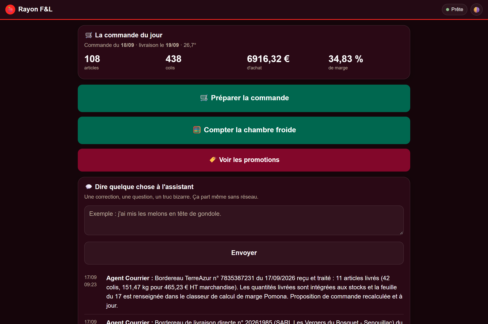
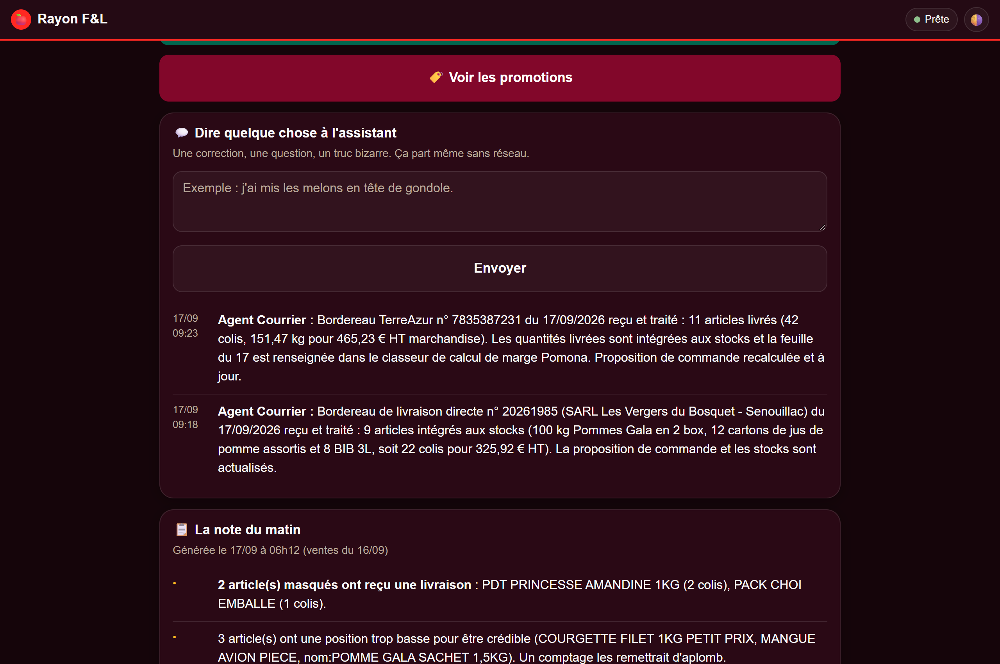
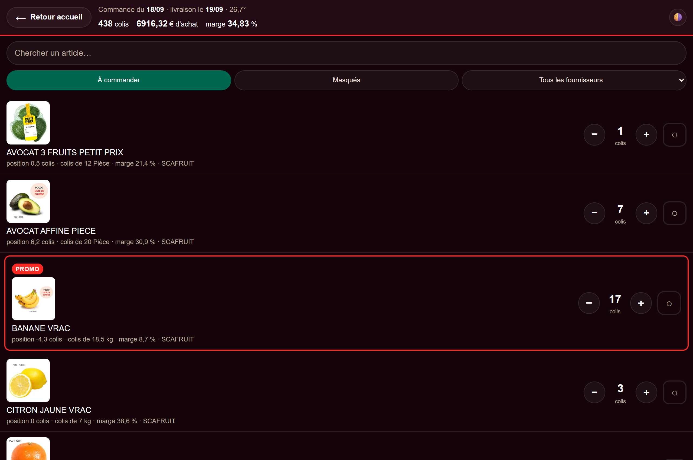
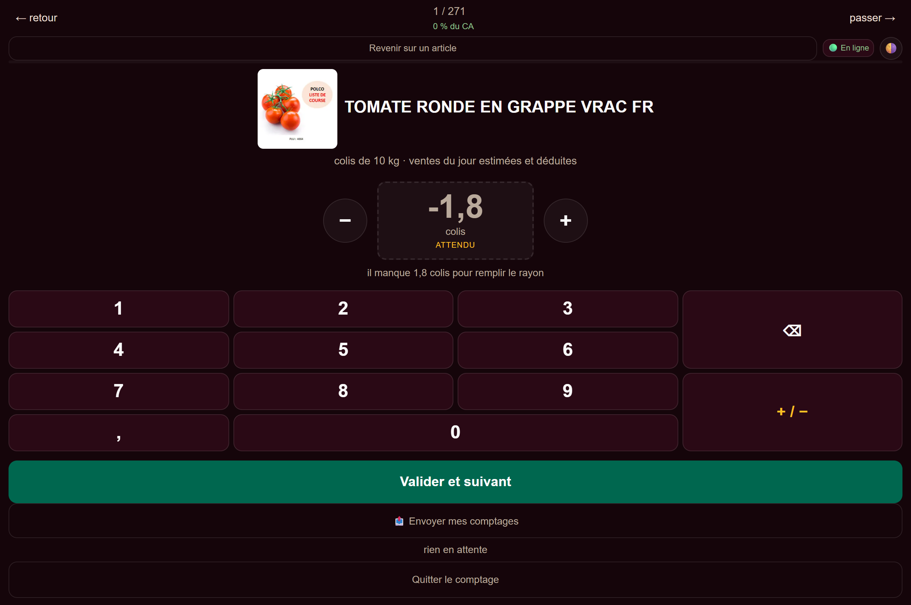
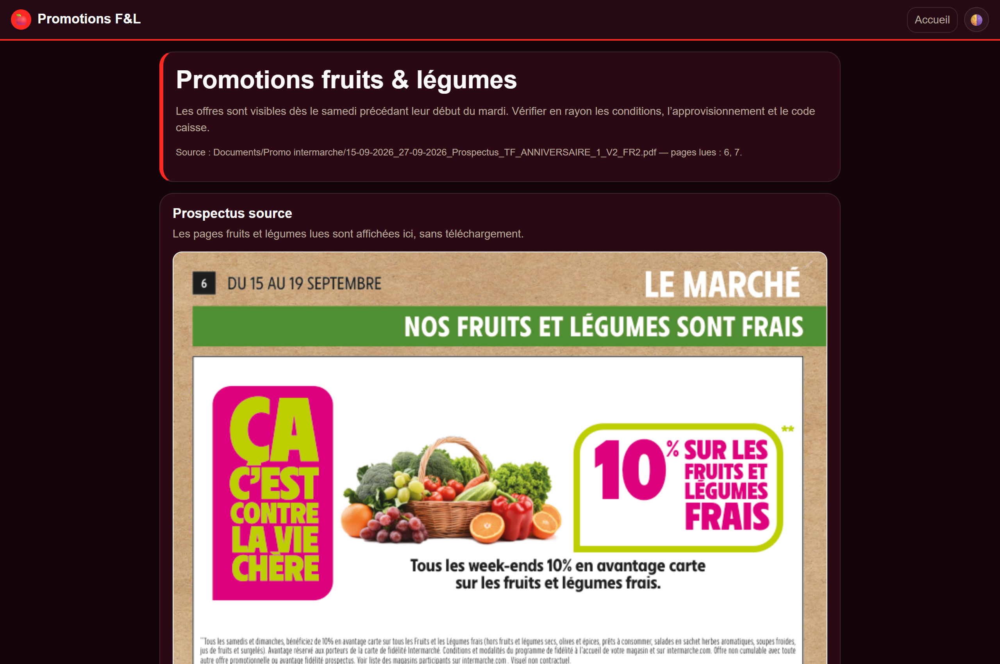
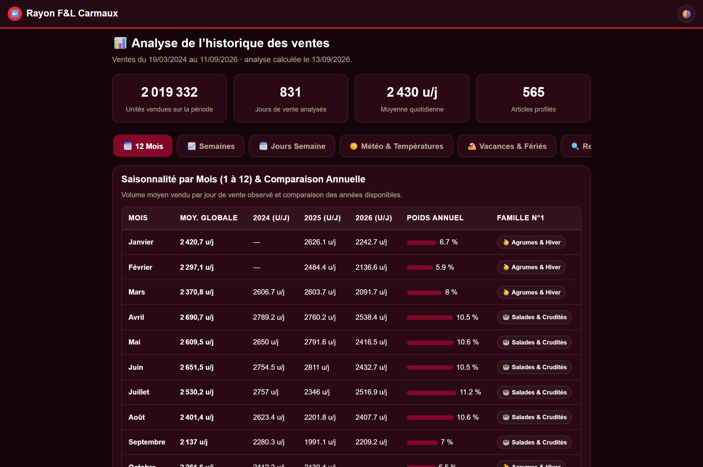

Découvrez l'Application Comme sur Votre Tablette
Voici les véritables écrans utilisés chaque matin au magasin Intermarché de Carmaux. Cliquez sur n'importe quel écran pour l'agrandir en haute définition.

01. Accueil & Météo de la Journée
Le point de départ du matin : vision instantanée sur les indicateurs de rentabilité, la météo et les boutons d'accès direct vers le cadencier et la chambre froide.

02. Assistant de Rayon Conversationnel
Un espace de discussion direct avec la brigade numérique pour transmettre les observations du rayon sans manipulation informatique complexe.

03. Console Cadencier & Proposition
L'outil central de validation : des photos nettes pour identifier instantanément les produits, les quantités par carton, et des boutons tactiles « + » et « - ».

04. Pointage Guidé en Chambre Froide
Un gain de temps considérable : les références sont classées par importance économique pour ne jamais perdre de temps sur des micro-rotations dans le froid.

05. Pavé Tactile Géant & Demi-Colis
Conçu pour le terrain : de grandes touches bien espacées permettant d'enregistrer immédiatement les cartons entamés (0,5 colis, 1,5 colis, 2,5 colis).

06. Promotions & Prospectus Intermarché
Anticipation commerciale : l'application met en valeur les produits phares des catalogues en cours pour vous assurer d'avoir le stock nécessaire le jour J.

07. Historique des Ventes & Tendances
Comprendre l'évolution d'un produit : historique des 14 derniers jours, corrélation avec la météo et comparaison avec l'historique de l'an dernier.